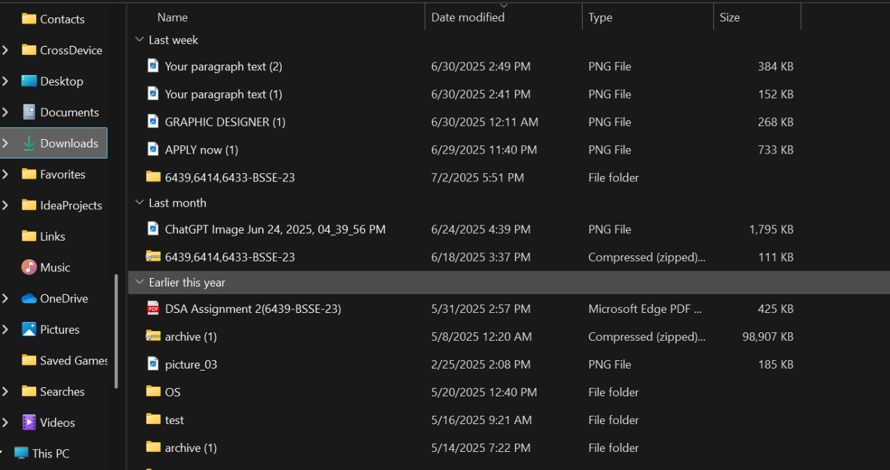
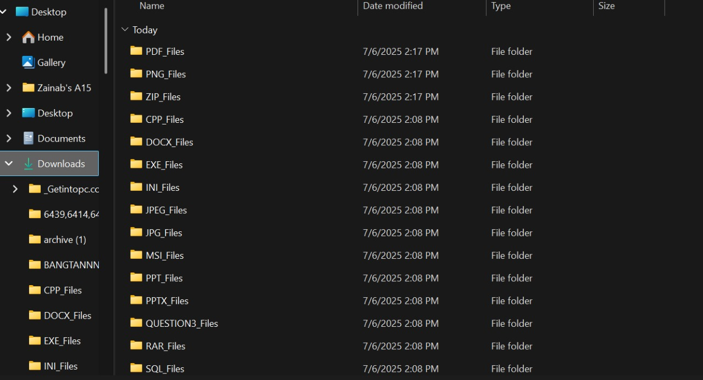
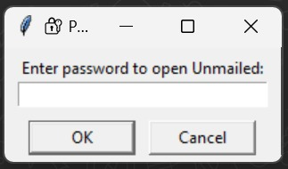
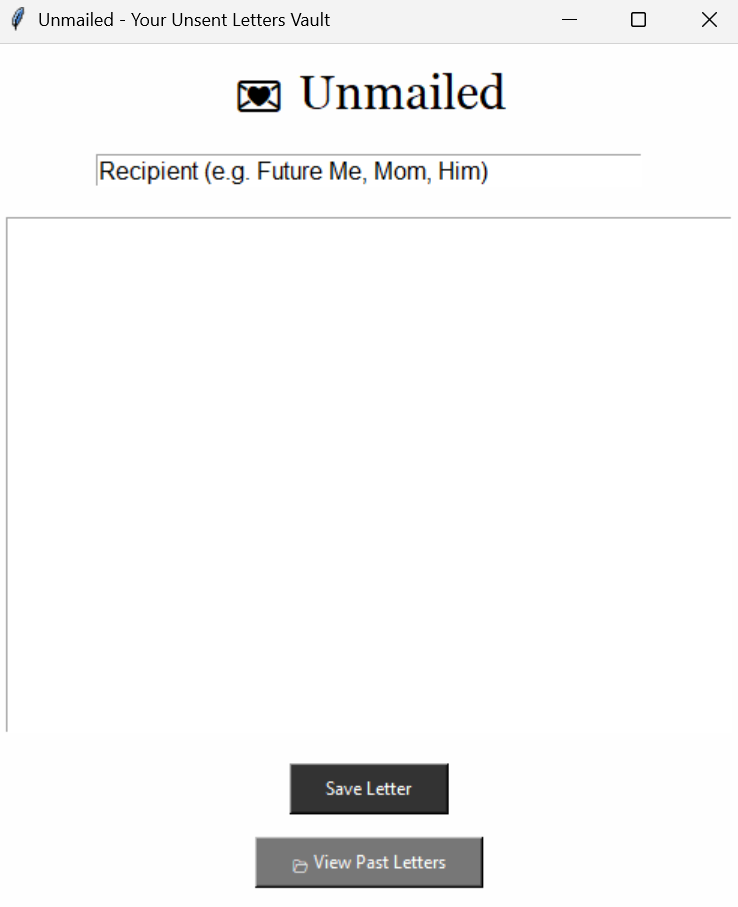
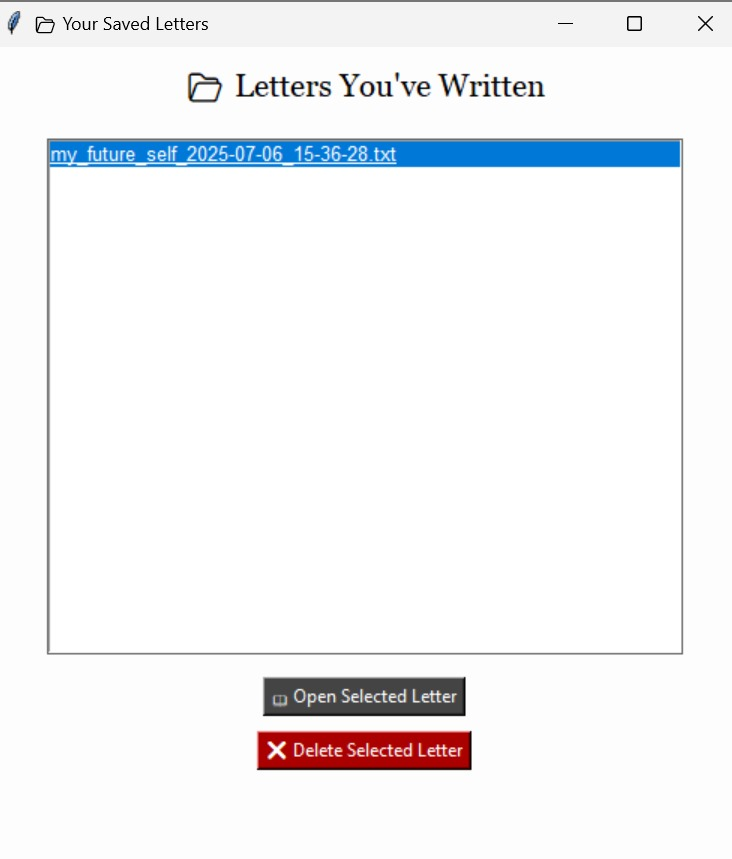

Software Engineering Student
Passionate about building solutions using Python, Web Dev, and Machine Learning.
Console based app for room booking and billing using file handling and functions.
Built a complete Email System using Java with a graphical interface. Features include user login, inbox/outbox views, email composition, and account management. Designed using OOP and event-driven programming concepts.
A text-based ML app that classifies user emotions using natural language processing.
Built a Python script that automatically organizes messy folders by grouping files into subfolders like PDF_Files, JPG_Files, etc. It uses os and shutil to do the heavy lifting.
Before organizing:
After organizing:
A Python GUI app that lets you write and store private, unsent emotional letters. Includes password protection, file saving, and the ability to view or delete your past letters.
Technologies: Python, Tkinter, File I/O
🔐 Password Screen
🏠 Home Page
📖 View Letters
A reflective journal app inspired by BTS's "Inner Child." Users select a mood, view motivational quotes, and write journal entries. Entries are saved with timestamps, creating a digital archive of emotional states.
🏠 Home Screen
📝 Journal Entry
Email: zainab199703@gmail.com
LinkedIn: linkedin.com/in/zainabraza03
GitHub: zainabraza07